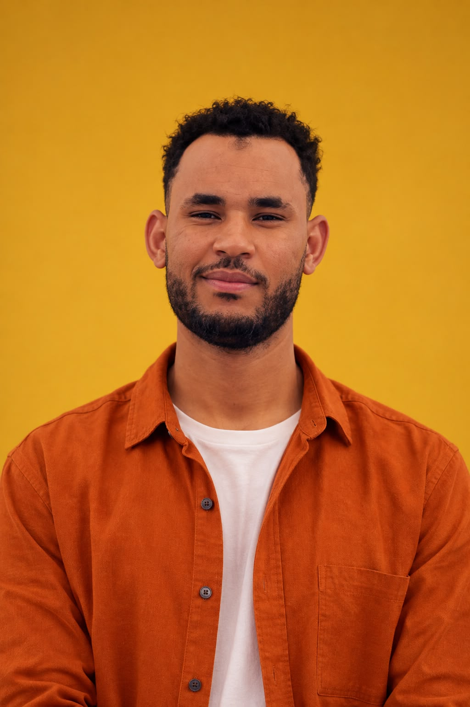

Reconnaissance biométrique de l’iris
- Système de reconnaissance biométrique fondé sur des réseaux convolutifs.
- Prétraitement des images, entraînement et intégration du modèle.
Étudiant en Master 2, IA et Science des Données
Je conçois des modèles de classification et des systèmes RAG. Je recherche un stage PFE en IA et recherche appliquée.
Survolez le fond : un point de requête est classé par ses k plus proches voisins. Cliquez pour ajouter un point.

Je suis ouvert aux propositions de stage PFE en intelligence artificielle , Science de donnnées et recherche appliquée.